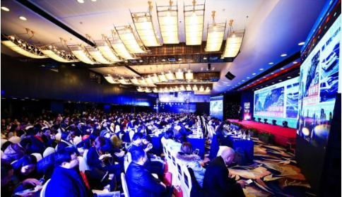

做中国领先的
人力成本优化解决方案+人力资源SAAS软件服务商
致力于用科技推动中国人力资源管理的变革
2018年1月6日，由国内知名社群驱动创投媒体希鸥网联合北京创业投资协会、希欧会在北京亚洲大酒店举办的第三届中国CEO新年峰会暨年度金鸥奖公益盛典在北京亚洲大酒店盛大举行。50多位创投/创业分享嘉宾，1300多位创业公司CEO到达本次峰会现场。其中，人事人作为人力资源行业快速成长的黑马受邀参展，人事人创始人兼CEO王铠受到主办方特别邀约出席会议。

本届峰会设有主题演讲、圆桌论坛、颁奖盛典、公益晚宴等多个环节，并对2017年度在商业创新和行业变革中具有代表性的创业机构和创业者进行嘉许。大家共同见证本年度新锐创投机构奖项和领袖创业者个人奖项诞生。峰会中，人事人创始人兼CEO王铠荣获“2017年度企业服务行业最具影响力CEO”奖项!
本次第三届中国CEO新年峰会得到创业邦、中国青年报、搜狐科技、今日头条、界面新闻、凤凰新闻新媒体、腾讯新闻新媒体、网易新闻新媒体等100多家到场支持和宣传报道。
人事人创始人兼CEO王铠受主办方特别邀约出席本届峰会论坛分享环节，同时出席峰会的嘉宾还有“今日头条创作空间总负责人—喻平、集素资本合伙人—金坚利、智慧图CEO—欧阳、车主邦CEO—戴震”，各位嘉宾围绕“创业有方-新商业下的创业成长法则”这一主题展开讨论。人事人CEO王铠在被主持人问及2018年创业风口时，指出：“行业的发展要充分考虑市场的需求，人事人在前几年的发展中也走过许多弯路，但是为企业降低用工风险、节省用工成本这件事，始终是人事人业务发展的最核心部分，而且这方面业务也是每家企业在发展的过程中所必需的。”
同时，提及创业风头，王铠通过对比中国和美国在人力资源外包化方面的发展，总结出各个行业的发展都要考虑到政府、时代、以及我们所处的环境这个大背景下整体看待。
场内人事人CEO王铠及其他嘉宾在圆桌论坛环节的巅峰思想碰撞，干货满满，掌声不断!场外人事人的展位热闹非凡，咨询业务的企业络绎不绝。
据悉，人事人科技有限公司，是国内领先的人事外包综合服务商，人事人旗下的人力服务机构最早的成立于2008年，并于2015年起开始对多家人力公司进行整合。同年人事人研发出一站式人力资源SaaS服务平台，为客户提供“技术平台+解决方案+业务服务”综合化3A服务体系。同时推出的薪酬管理、社保管理、劳务派遣、岗位外包、员工福利、业务外包、商业保险等业务，还可根据企业所属不同行业定制化的输出解决方案，人工智能化处理。切实解决了企业用工成本高等一系列问题。
目前，人事人已在全国375个城市实现了服务全覆盖，并在北京、上海、广州、杭州、南京等地设有13家直营机构，累计服务超过1万家企业。
文章来源：http://www.csdn.net/article/a/2018-01-10/15939753